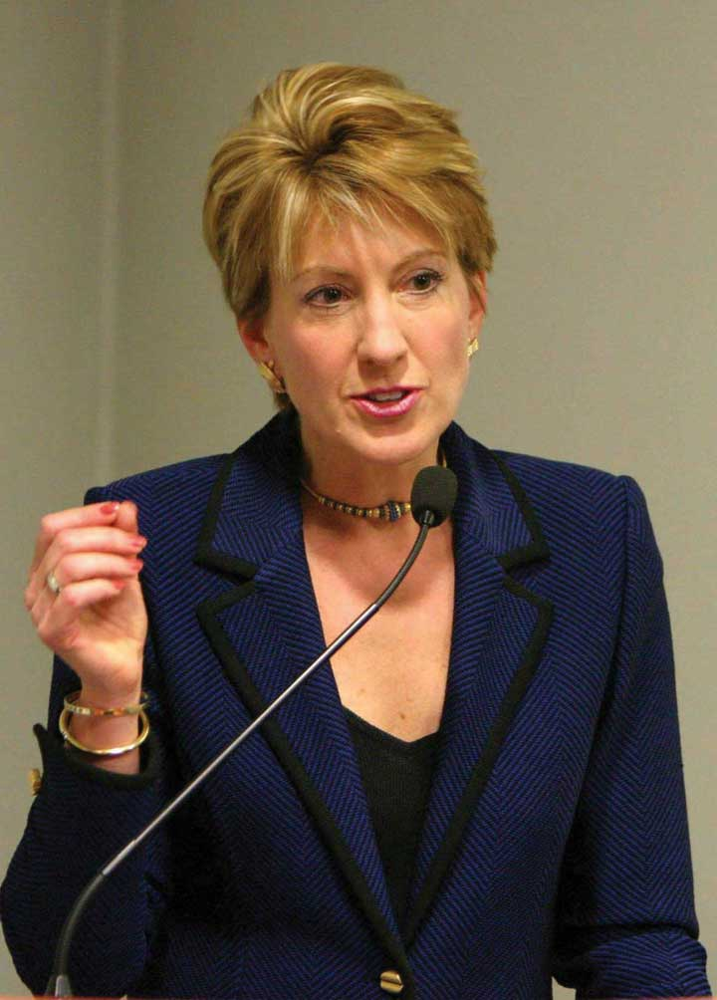
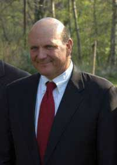
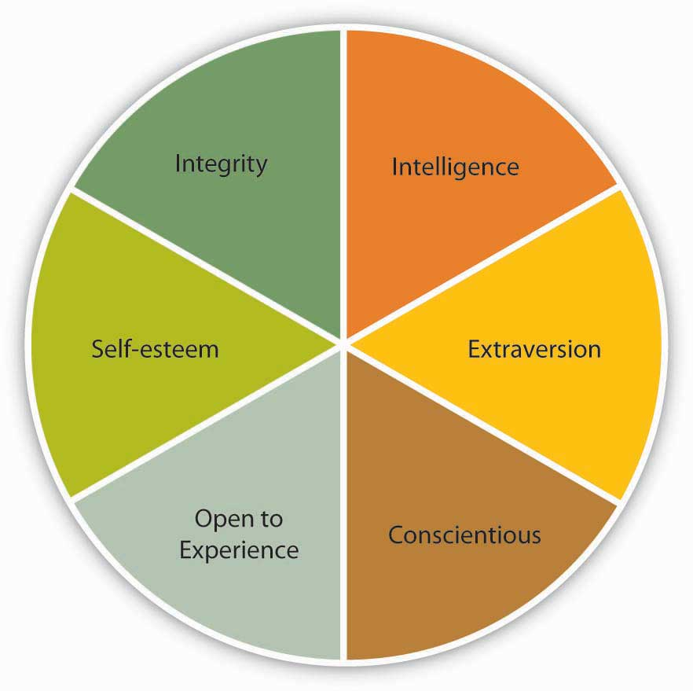
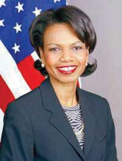

The earliest approach to the study of leadership sought to identify a set of traits that distinguished leaders from nonleaders. What were the personality characteristics and the physical and psychological attributes of people who are viewed as leaders? Because of the problems in measurement of personality traits at the time, different studies used different measures. By 1940, researchers concluded that the search for leadership-defining traits was futile. In recent years, though, after the advances in personality literature such as the development of the Big Five personality framework, researchers have had more success in identifying traits that predict leadership.House, R. J., & Aditya, R. N. (1997). The social scientific study of leadership: Quo Vadis? Journal of Management, 23, 409–473. Most importantly, charismatic leadership, which is among the contemporary approaches to leadership, may be viewed as an example of a trait approach.
The traits that show relatively strong relations with leadership are discussed below.Judge, T. A., Bono, J. E., Ilies, R., & Gerhardt, M. W. (2002). Personality and leadership: A qualitative and quantitative review. Journal of Applied Psychology, 87, 765–780.
Figure 12.2
Many observers believe that Carly Fiorina, the ousted CEO of HP, demonstrated high levels of intelligence but low levels of empathy for the people around her, which led to an overreliance on numbers while ignoring the human cost of her decisions.Karlgaard, R. (2002, February 18). Vote Carly. Forbes, 169(4), 37.
General mental ability, which psychologists refer to as “g” and which is often called “IQ” in everyday language, has been related to a person’s emerging as a leader within a group. Specifically, people who have high mental abilities are more likely to be viewed as leaders in their environment.House, R. J., & Aditya, R. N. (1997). The social scientific study of leadership: Quo Vadis? Journal of Management, 23, 409–473; Ilies, R., Gerhardt, M. W., & Huy, L. (2004). Individual differences in leadership emergence: Integrating meta-analytic findings and behavioral genetics estimates. International Journal of Selection and Assessment, 12, 207–219; Lord, R. G., De Vader, C. L., & Alliger, G. M. (1986). A meta-analysis of the relation between personality traits and leadership perceptions: An application of validity generalization procedures. Journal of Applied Psychology, 71, 402–410; Taggar, S., Hackett, R., & Saha, S. (1999). Leadership emergence in autonomous work teams: Antecedents and outcomes. Personnel Psychology, 52, 899–926. We should caution, though, that intelligence is a positive but modest predictor of leadership, and when actual intelligence is measured with paper-and-pencil tests, its relationship to leadership is a bit weaker compared to when intelligence is defined as the perceived intelligence of a leader.Judge, T. A., Colbert, A. E., & Ilies, R. (2004). Intelligence and leadership: A quantitative review and test of theoretical propositions. Journal of Applied Psychology, 89, 542–552. In addition to having a high IQ, effective leaders tend to have high emotional intelligence (EQ). People with high EQ demonstrate a high level of self awareness, motivation, empathy, and social skills. The psychologist who coined the term emotional intelligence, Daniel Goleman, believes that IQ is a threshold quality: It matters for entry- to high-level management jobs, but once you get there, it no longer helps leaders, because most leaders already have a high IQ. According to Goleman, what differentiates effective leaders from ineffective ones becomes their ability to control their own emotions and understand other people’s emotions, their internal motivation, and their social skills.Goleman, D. (January, 2004). What makes a leader? Harvard Business Review, 82(1), 82–91.
Psychologists have proposed various systems for categorizing the characteristics that make up an individual’s unique personality; one of the most widely accepted is the “Big Five” model, which rates an individual according to Openness to experience, Conscientiousness, Extraversion, Agreeableness, and Neuroticism. Several of the Big Five personality traits have been related to leadership emergence (whether someone is viewed as a leader by others) and effectiveness.Judge, T. A., Bono, J. E., Ilies, R., & Gerhardt, M. W. (2002). Personality and leadership: A qualitative and quantitative review. Journal of Applied Psychology, 87, 765–780.
Figure 12.3 Big Five Personality Traits

Figure 12.4
Steve Ballmer, CEO of Microsoft Corporation, is an extraverted leader. For example, to celebrate Microsoft’s 25th anniversary, Ballmer enthusiastically popped out of the anniversary cake to surprise the audience.
For example, extraversion is related to leadership. Extraverts are sociable, assertive, and energetic people. They enjoy interacting with others in their environment and demonstrate self-confidence. Because they are both dominant and sociable in their environment, they emerge as leaders in a wide variety of situations. Out of all personality traits, extraversion has the strongest relationship with both leader emergence and leader effectiveness. This is not to say that all effective leaders are extraverts, but you are more likely to find extraverts in leadership positions. An example of an introverted leader is Jim Buckmaster, the CEO of Craigslist. He is known as an introvert, and he admits to not having meetings because he does not like them.Buckmaster, J. (2008, May). How does he manage? Classified website boss. Management Today, 15. Research shows that another personality trait related to leadership is conscientiousness. Conscientious people are organized, take initiative, and demonstrate persistence in their endeavors. Conscientious people are more likely to emerge as leaders and be effective in that role. Finally, people who have openness to experience—those who demonstrate originality, creativity, and are open to trying new things—tend to emerge as leaders and also be quite effective.
Self-esteem is not one of the Big Five personality traits, but it is an important aspect of one’s personality. The degree to which a person is at peace with oneself and has an overall positive assessment of one’s self worth and capabilities seem to be relevant to whether someone is viewed as a leader. Leaders with high self-esteem support their subordinates more and, when punishment is administered, they punish more effectively.Atwater, L. E., Dionne, S. D., Camobreco, J. F., Avolio, B. J., & Lau, A. (1998). Individual attributes and leadership style: Predicting the use of punishment and its effects. Journal of Organizational Behavior, 19, 559–576; Niebuhr, R. E., & Davis, K. R. (1984). Self-esteem: Relationship with leader behavior perceptions as moderated by the duration of the superior-subordinate dyad association. Personality and Social Psychology Bulletin, 10, 51–59. It is possible that those with high self-esteem have greater levels of self-confidence and this affects their image in the eyes of their followers. Self-esteem may also explain the relationship between some physical attributes and leader emergence. For example, research shows a strong relationship between being tall and being viewed as a leader (as well as one’s career success over life). It is proposed that self-esteem may be the key mechanism linking height to being viewed as a leader, because people who are taller are also found to have higher self-esteem and therefore may project greater levels of charisma as well as confidence to their followers.Judge, T. A., & Cable, D. M. (2004). The effect of physical height on workplace success and income: Preliminary test of a theoretical model. Journal of Applied Psychology, 89, 428–441.
Research also shows that people who are effective as leaders tend to have a moral compass and demonstrate honesty and integrity.Reave, L. (2005). Spiritual values and practices related to leadership effectiveness. Leadership Quarterly, 16, 655–687. Leaders whose integrity is questioned lose their trustworthiness, and they hurt their company’s business along the way. For example, when it was revealed that Whole Foods Market CEO John Mackey was using a pseudonym to make negative comments online about the company’s rival Wild Oats Markets Inc., his actions were heavily criticized, his leadership was questioned, and the company’s reputation was affected.Farrell, G., & Davidson, P. (2007, July 13). Whole Foods’ CEO was busy guy online. USA Today, Money section, p. 04B.
Figure 12.5 Key Traits Associated With Leadership
There are also some traits that are negatively related to leader emergence and being successful in that position. For example, agreeable people who are modest, good natured, and avoid conflict are less likely to be perceived as leaders.Judge, T. A., Bono, J. E., Ilies, R., & Gerhardt, M. W. (2002). Personality and leadership: A qualitative and quantitative review. Journal of Applied Psychology, 87, 765–780.
Figure 12.6
Condoleezza Rice had different responsibilities as the provost of Stanford University compared to her role as secretary of state for the United States. Do you think these differences affected her behavior as a leader?
Despite problems in trait approaches, these findings can still be useful to managers and companies. For example, knowing about leader traits helps organizations select the right people into positions of responsibility. The key to benefiting from the findings of trait researchers is to be aware that not all traits are equally effective in predicting leadership potential across all circumstances. Some organizational situations allow leader traits to make a greater difference.House, R. J., & Aditya, R. N. (1997). The social scientific study of leadership: Quo Vadis? Journal of Management, 23, 409–473. For example, in small, entrepreneurial organizations where leaders have a lot of leeway to determine their own behavior, the type of traits leaders have may make a difference in leadership potential. In large, bureaucratic, and rule-bound organizations such as the government and the military, a leader’s traits may have less to do with how the person behaves and whether the person is a successful leader.Judge, T. A., Bono, J. E., Ilies, R., & Gerhardt, M. W. (2002). Personality and leadership: A qualitative and quantitative review. Journal of Applied Psychology, 87, 765–780. Moreover, some traits become relevant in specific circumstances. For example, bravery is likely to be a key characteristic in military leaders, but not necessarily in business leaders. Scholars now conclude that instead of trying to identify a few traits that distinguish leaders from nonleaders, it is important to identify the conditions under which different traits affect a leader’s performance, as well as whether a person emerges as a leader.Hackman, J. R., & Wageman, R. (2007). Asking the right questions about leadership: Discussion and conclusions. American Psychologist, 62, 43–47.
Many studies searched for a limited set of personal attributes, or traits, which would make someone be viewed as a leader and be successful as a leader. Some traits that are consistently related to leadership include intelligence (both mental ability and emotional intelligence), personality (extraversion, conscientiousness, openness to experience, self-esteem), and integrity. The main limitation of the trait approach was that it ignored the situation in which leadership occurred. Therefore, it is more useful to specify the conditions under which different traits are needed.


{kind=link}
{kind=link}
{kind=link}